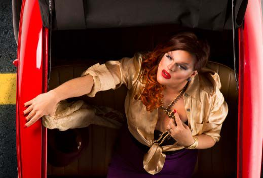
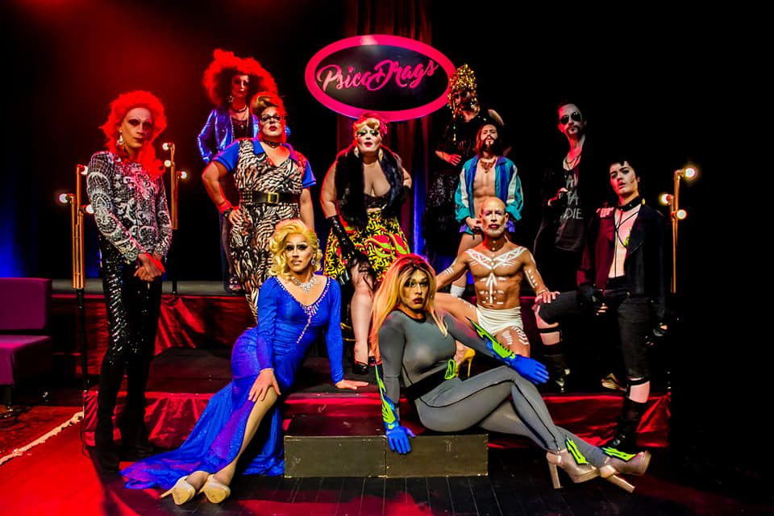
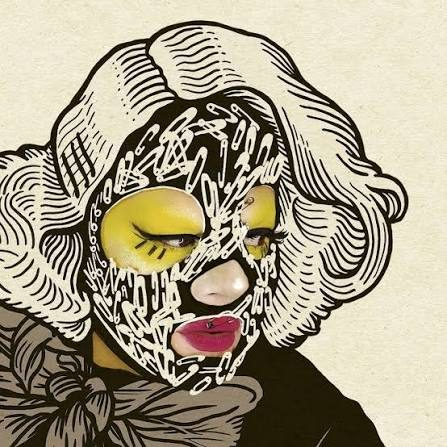

Criei a Dalva em 2009. Ela é drag queen, comediante, palestrante, cantora e compositora — uma persona que se tornou referência no cenário drag queen/transformista, da arte LGBTQIA+ e do humor, tanto pela atuação como performer quanto pela promoção de eventos de formação, encontro, pesquisa e construção de mercado.
Dalva cria espaços para o encontro e a valorização de artes marginais, como o transformismo e o circuito alternativo de comédia, para a discussão histórica desses segmentos e para o posicionamento dessas artes em relação aos temas da sexualidade e da diversidade.
Com um jeito irônico e debochado, transita por diversos meios: do trabalho na noite, como produtora, promoter e seletora musical, à atuação em teatros tradicionais, instituições culturais e espaços alternativos; do circuito mais tradicional da comédia aos espaços corporativos, como palestrante.
Eu já vinha me montando antes, mas dentro do teatro — fiz uma menina caricata em O analfabeto político, apareci montado em outros espetáculos. Não era o meio drag queen, era personagem. O contato com a cena veio em Salvador, em 2011, quando me montei e fiz um show numa boate gay pela primeira vez.

A noite
A cena noturna historicamente é o espaço de sobrevivência da cultura transformista e de outras artes marginais. Desde 2009, diante da inexistência de espaços de apresentações artísticas na noite curitibana, venho criando oportunidades de valorização do transformismo em festas e casas noturnas.
OVER: (2014–2015) com o promoter Luizo Cavet, na casa noturna Soviet — edições temáticas que convidavam o público a se montar Crossdresserdiscodiva com o Paradis Club — concursos e apresentações Natal Infernal e Natal Tropical — festas anuais de fim de ano da Selvática Ações Artísticas DJ e promoter desde 2011 — V.U., Bar do Simão, Vitreaux, Paradis Club, Rua Pagu, Soviet, Atari, Maracangalha, Jokers, Camaleão
Entravecando com Dalvinha Brandão
Desde 2013
A primeira oficina itinerante de arte drag do Brasil. Mais de 20 cidades brasileiras, mais de 300 alunos e alunas.
Levou não apenas técnicas de maquiagem, customização de acessórios e perucas e noções de criação performática, mas principalmente conceitos relacionados ao transformismo, ao gênero, à contextualização histórica e ao posicionamento crítico. Aberta a qualquer pessoa, independentemente de gênero ou idade.
Entravecando com Dalvinha Brandão, cartaz de 2013.
O Maravilhoso Cabaré das Divinas Divas
Desde 2016 · Curitiba
Criado com a drag queen Juana Profunda. Reúne no espaço teatral diversos segmentos do transformismo da cidade, além de artistas da música, palhaçaria, burlesco, dança, teatro e performance — num formato de cabaré com linguagem quase televisiva, misturando entrevistas, apresentações e brincadeiras com o público.
Em 15 edições, reuniu o trabalho de mais de 50 artistas locais e de outras cidades, sempre com casa cheia.
Especiais: paródia de O que terá acontecido a Baby Jane? (2017) · Família Tradicional Brasileira (2019) · encerramento de 2018 com Ikaro Kadoshi
Derivação d'O Maravilhoso Cabaré: a partir da equipe artística reunida para as apresentações durante o Festival Psicodália, em 2017, formou-se um coletivo. Reúne 11 artistas do teatro, da música e da moda em torno da arte drag e do burlesco.
Mostra Novos Repertórios (2018) · Ruído em Cena (2018) · Mostra Oficial do Festival de Curitiba (2022)

PsicoDrags. Foto: Day Luiza.
Quinta Cítrica
2015–2016 · La Bamba, Curitiba
Evento mensal de comédia experimental, coproduzido com Vi Gabarda e Kysy Fischer. Foco na valorização das linguagens alternativas do humor, reunindo atores, comediantes, performers, palhaços, artistas burlescos, drag queens e compositores — com um humor que destoa da produção humorística comercial.
O evento também tinha o intuito de criar espaço para novos artistas, reunindo sempre participantes mais experientes e artistas no começo da carreira.
Edições especiais em São Paulo, Rio de Janeiro, Florianópolis e Berlim. A edição "Especial Queens" aconteceu no Teatro Cacilda Becker, Rio de Janeiro (2016).
Em 2015 mudei-me para o Rio de Janeiro e, no ano seguinte, ainda com o propósito de enfatizar a drag queen como linguagem artística, criei o Circuito Artes da Noite — ocupação do teatro em parceria com o festival Yes, Nós Temos Burlesco!
Reuniu arte drag, cena alternativa da comédia e burlesco, cruzando gerações — de jovens artistas do coletivo Drag-se a artistas com 30 e 40 anos de carreira, que costumam se apresentar na Turma OK. Tudo num espaço normalmente dedicado ao teatro e à dança mais tradicionais, com oficinas, bate-papos e encontros.
Troféu Cabeça de Chinchila
Desde 2012
Prêmio anual, sátira ao teatro curitibano. Premia os melhores e os piores, segundo uma comissão soberana. Criação e organização com Leonarda Glück, Ricardo Nolasco, Igor Augustho e Biá Lopes, ligado à Selvática Ações Artísticas. Organizo e apresento.
Em atividade há mais de treze anos.
Mediação, apresentação e palestras
Uma das principais características do meu trabalho é transitar entre o humor e a seriedade com facilidade. Isso possibilitou a participação em eventos diversos — no meio artístico, acadêmico e corporativo — na qualidade de mestre de cerimônias, mediadora e debatedora.
Levo também a cultura drag e a discussão de gênero e sexualidade para meios diversos do ambiente artístico, por meio de palestras, falas e consultorias no meio corporativo e educacional.
Eventos — Bienal Sesc de Dança (2017) · #ContémDança · FLIMO — Festival Literário de Morretes · O Debatão, da Combo Drag Week · Possibilidades de estar Dança Palestras — Pecha Kucha Night (2015) · TEDxRebouças (2019), com a palestra Você é ficção Universidades — UFPR, Uninter, Universidade Positivo e PUC-PR Ações educativas — em parceria com o Transgrupo Marcela Prado, Curitiba
Consultório Sentimental
Desde 2021 · YouTube
Série de entrevistas nascida das lives da pandemia, quando eu respondia perguntas do público na condição de "especialista em nada". Com o tempo, passei a convidar especialistas de verdade, para trazer respostas com embasamento.
Divã das Divas (2022) — temporada especial, com a Lei Aldir Blanc, entrevistando personagens icônicas da cena artística LGBTQIA+: Leonarda Glück, Maria Alcina, Lufe Steffen, Getúlio Abelha, Lorna Washington, Leo Moreira Sá e Verônica Valenttino.
O Amor É Uma Invenção da Nasa pra Vender Travesseiro
2022 · álbum
Oito faixas autorais. Direção musical de Leo Gumiero. Produção de Jo Mistinguett, Amira Massabki, Leo Gumiero e Vini Ruiz. Participações de Vini Sant, Simone Magalhães e Fer Fuchs. Capa ilustrada por André Costa, a partir de foto de Aurelio Dominoni.
O disco passeia pelo pop, punk, post punk e synth pop para construir um imaginário novelesco e tragicômico. Na contramão da tendência pop de autoafirmação e superação, as faixas falam do patético, do fracasso e de histórias de amor que deram errado.
Pré-lançamento na 1ª MIC — Mostra Internacional de Cabaret, Espaço Fantástico das Artes, Curitiba, maio de 2022. A versão pocket do show circulou por diversas cidades brasileiras.

Ilustração: André Costa
Singles
Psicopata do Amor (2018) — primeira composição, inspirada na disco music brasileira dos anos 1970 e 80 e nas canções trágicas de Teixeirinha, Diana e Amado Baptista. Surgiu de uma pergunta: o que você faria se matasse alguém? A letra é de uma mulher que mata o companheiro e conversa mentalmente com o morto. Videoclipe em 2019, direção de Juliana Sanson.
Algemas do Amor (2021) — versão de "Keep Me Hangin' On", das Supremes. Clipe dirigido por Carol Winter.
Projetos e ocupações
Sim, nós somos bizarras (2014–2015) — co-direção artística, Prêmio Rumos Itaú Cultural. Ver em Direção.
A Rainha da Beleza (2014) — intercâmbio com Dani Umpi. Ver em Direção.
Travesqueens (2011, 2012 e 2015) — Bienal Sesc de Dança e Mostra Cuore di Brasile, Bolonha. Ver em Parcerias.
Qual é a Graça? Entendendo como funciona uma piada
2022 · oficina
Oficina teórico-prática de escrita cômica. Parte de uma visão histórica do riso — da filosofia clássica à antropologia e à sociologia — e analisa como esses conceitos aparecem em esquetes, vídeos de TikTok, memes, cenas de filmes e stand up.
Curitiba · interior do Paraná · Florianópolis · Joinville · Porto Alegre · São Paulo. Formatos de 25 e 50 horas.